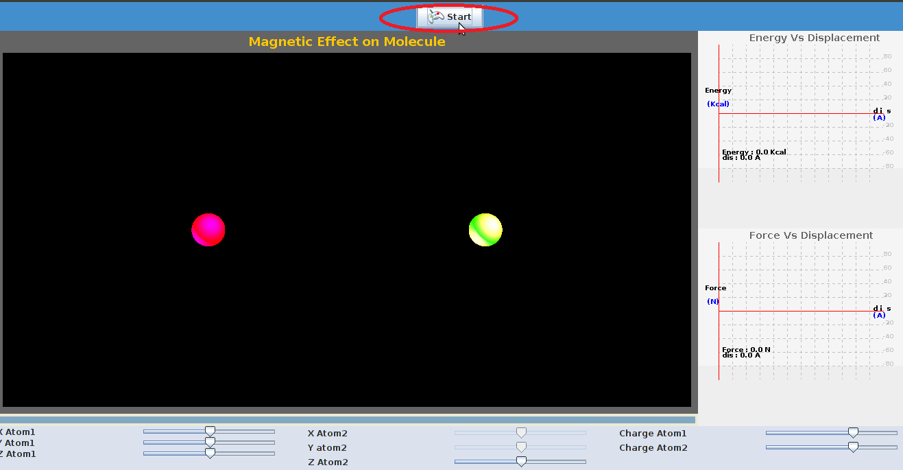
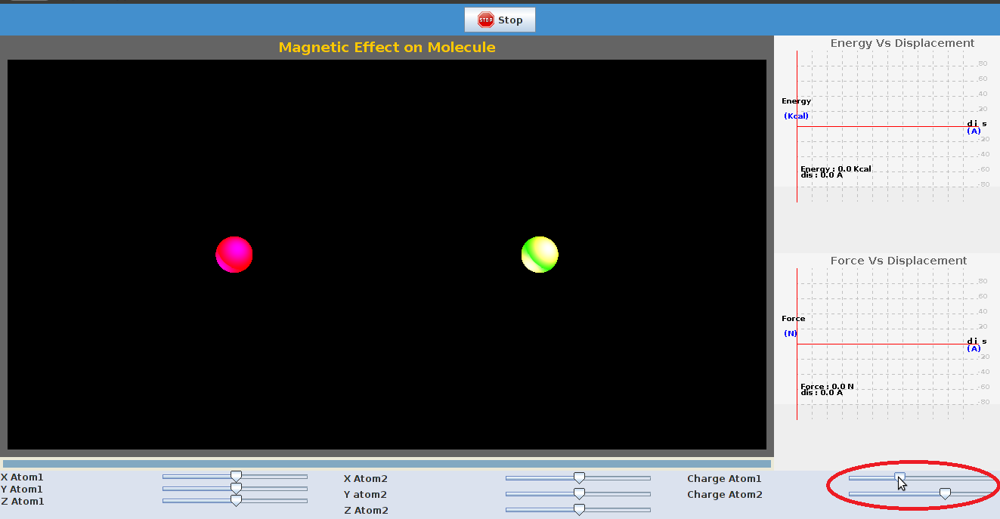
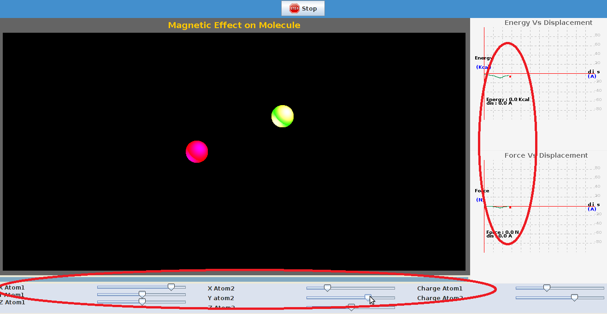

Introduction
Electronegative atoms attract electrons more than electropositive atoms.This gives rise to uneven charge distribution in the molecule,The most common ways to represent charge distribution as point charges localised in the molecule.We then use coloumb's potential for point charges to estimate the forces between charged portions and uncharged portions.

Theory
The columb potential is an effective pair potential is an effective pair potential that describes the interactions between the two point charges.This acts along the line connecting two charges.This is given by the following equation:
q1, q2 are electric charges in coloumbs carried by charge1 and charge2.
ε0 - electrical permittivity of the space.
Two opposite charge particles gives an attractive potential ,whereas if charge on the both particles is same it leads an repulsive potential.The resulting potential is as shown in the figure below:
 This plot shows the variation of columb potential with distance in nanometers.The bottom part represents potential between opposite charge i.e., attractive potential,
the top part in the figure represents the potential between like charges i.e., repulsive.
This plot shows the variation of columb potential with distance in nanometers.The bottom part represents potential between opposite charge i.e., attractive potential,
the top part in the figure represents the potential between like charges i.e., repulsive.
Electrostatic potential decays slowly with distance.

Objective
To demonstrate the electrostatic potential between molecules.

Experiment

Manual
| STEP1:Click on 'start to start the experiment. |
|  |
| Step2: The charge on the both the particles can be varied variying the position of the slider. |
|  |
| Step 3: The coordinates of particles can be changed by the position of slider,A plot of force,energy is seen. |
|  |

Quizzes

Further Readings
- P.W Atkins "Physical chemistry"
- Intermolecular forces by Jacob N.Israelachvili
- Jurij Kotar “Optical Tweezers” ,University of Cambridge, Cavendish Laboratory, Biological and Soft Systems.
- Royer, Donald J. Bonding Theory. New York, NY.:McGraw-Hil
- http://ww2.chemistry.gatech.edu/~lw26/structure/molecular_interactions/mol_int.html#B
- http://www.pumma.nl/index.php/Theory/Potentials#Electrostatic Dynamics of structures by Anil K chopra.
- http://www.physics.uoguelph.ca/tutorials/shm/Q.shm.html
- http://www.physicsclassroom.com/class/estatics/u8l3b.cfm